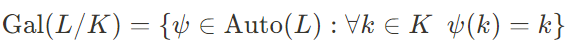
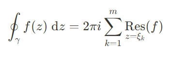
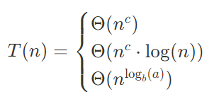
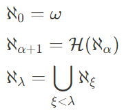
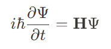

Algebra
Algebra abstrakcyjna pozwal spojrzeć na świat z dalszej perspektywy przez co umysł nie jest zaśmiecony szczegółami podczas rozwiązywania problemu. Interesujące mnie aspekty algebry to grupy, ideały pierścieni oraz teoria Galois. Użycie algebry pozwoliło na rozwiązanie starożytnych problemów takich jak podwojenie sześcianu, trisekcja kąta, czy też kwadratura koła
Analiza
Dziedzina ta dostarcza narzędzi do precyzyjnego opisu ciągłości, ułatwiając modelowanie świata rzeczywistego. Szczególnie przyjemność sprawia tutaj obliczanie całek oznaczonych.
Algorytmika
Algorytmy ułatwiają nasze życie uwalniając nas od konieczności nadmyślenia i improwizacji. Interesującą ich cechą jest zwykle złożoność obliczeniowa a także sposób jej wyznaczania
Teoria Liczb
Jeśli matematyka jest królową nauk to teoria liczb jest jej koroną. Liczby pierwsze zaś to klejnoty koronne
. Na pierwszy rzut oka powinna wydawać sie prosta, jednak sama nauka o liczbach naturalnych, szczególnie liczbach pierwszych, skrywa w sobie mnóstow tajemnic
Teoria Mnogości
W dodatku z logiką pozwala na wpełni formalny zapis matematyki i eliminuje z dowodów i twierdzeń "machanie rękami" (czego bardzo nie cierpi autor strony)
Fizyka Kwantowa
Mechanika kwantowa stara się zrozumieć jak działają podstawowe cząstki elementarne z których zbudowany jest cały nasz wszechświat. Obserwujemy tutaj rzeczy sprzeczne z codzienna logiką takie jak zasada nieoznaczoności Heisenberga lub splot kwantowy.
